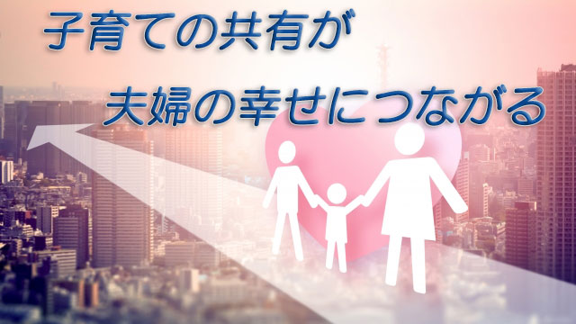

当り前の話だが女性は子どもを産むと母親になる。でも男性からするとこれは驚異的なことである。
女性は赤ん坊の泣き声を聞き我が胸にその赤子を抱いた瞬間母になる。
赤ん坊の誕生は別名「母親の誕生」とも言える。
私も記憶があるが、初めて子どもが産まれたとき赤子を抱く妻の表情が、既に母親そのものに変わっているのを見て驚きと、何とも言えない違和感を覚えた。
もちろん男も赤ん坊の誕生が嬉しくないわけではなく、五体満足で産まれて良かったとか「俺も父親として頑張らねば」という気持ちになる。
だが女性のように瞬時にスイッチが切り換わるような変わり身の早さは持ち併せていないのではないだろうか。
妻が急に母親の表情になったことに、まだその実感―親になったという自覚―がわかないこちらとしては戸惑いのような感情があり、それが居心地の悪さ、違和感につながったのだろう。
さて、子どもが産まれると同時に母親になれる妻と実感がわかない夫。この両者には溝が生じることがある。
夫からすると今まで自分に向けられていた妻の愛情が子どもの誕生と共に一気に子に注がれる。それまで自分に向けられていた愛情を100とすると、それが瞬時に10以下に減った（⁉）感じがする。(もちろん個人によって受け取り方は色々だろうが一般的にはそんな感じ)
夫としては何か寂しいような裏切られたような気持ちになるかも知れない。
そんなことを言うと、世の多くの女性から「何言ってるのよ。育児にかかりきりで大変なのに甘ったれたこと言わないでよ」とたちまち批判の声があがりそうだ。
ごもっとも！実際育児ノイローゼになる若い母親も多い。子育ては人生の中でも難事業であるに違いない。
だからそんな不安の中で子育てに邁進する妻に、夫もできる限り分担したり労わったりして支えることが「良き父親」としての努めだと思う。
事実アメリカなどの調査でも父親が積極的に子育てに参加した場合のほうが、そうでない家庭よりも子どもが健全に育つ割合が高いと分かっている。日本でも子どもが幼児期までに、父親が育児に協力的だったかどうかは後年の夫婦関係の良し悪しに影響すると言われている。
だから父親の子育てへの協力と参加は必要だと思っている。しかしここで重要なのは父親と母親の役割は違うということだ。
母の役割と父の役割
父親はまず第一に母親の良き理解者であることが望ましい。子どもの行状に対する妻のグチを聞いたり、その大変さを労わる気持ちをもち自分の出番が来たと感じたらすぐ動くなど、まず妻の話をよく聞いた上で支援する。
また、妻の取越し苦労や思い込みを取り除くことも夫の役割だろう。
個人的な話だが、かつて我が家の2人の息子が幼稚園児くらいのころ、突然「チン〇」と叫び出したことがあった。それだけでなくトンデモない下品な単語も飛び出し2人して面白がって連呼している。
どこで覚えてきたのか、決して人前で口にしてはならないそのおぞましい単語に妻は半狂乱（⁉）になって私に訴えた。
「どうするのよー。あんなこと人前で言ったら！」と半泣きの妻。
私は「心配ない。意味も分からず言ってるだけ。今だけだから。すぐに言わなくなるよ」と努めて平静を装いながらなだめたのである。実際すぐに言わなくなった。
今や大学生になりイッパシの口を利く息子たちを見て、私たち夫婦にとって幼かった彼らの「事件」は懐かしい笑い話（エピソード）になったが…。
世の中には、父親も母親と一緒になってこと細かに子どもの面倒を見るべきだと言う人もいるが、私はそうは思わない。
父親の役割は母親と同じことをすることではない。子どもに「母親」は2人要らない。それだと子どもの立場がない。
たまに母親以上に口やかましく、子どもの行状にアレコレ介入する父親がいるがロクなことにはならない。子どもが思春期になると、このタイプの父親は勉強のやり方などにも介入してかえってヤル気をそぐことになりがちだし、子どもはそんな父親のお説教に反発して親から遠ざかる。
確かに赤ん坊のころなら夜中にミルクをあげる。オシメを取り換える。風呂に入れるなどの作業を交代で努めたり、休日には一緒に遊ぶなどは父親の重要な勤めであると思う。
もちろん家庭の事情は様々だし子育てに絶対の正解はない。それでも父母の役割分担は明確にしておいたほうが良い。
どうしても母親は子どもと日常的に接する時間が多いし、女性特有の観察眼によって子どもの一挙手一投足に目が届きやすい。それは良いことだが、反面虫メガネで見るように細かい部分にフォーカスし過ぎる傾向がある。父親はもっと視野を拡大し、子どもの行動を部分より全体として把握するよう努めたほうが良い。
つまり妻のよき理解者となりながら、適切なタイミングで大所高所から助言すること。そんなバックアップ体制を心がけたい。
妻も子どもが産まれると同時に、母親スイッチの促されるまま全てのエネルギーを子に注ぐのでなく、夫が子育てにうまく参加するよう誘導することが大事になる。
男には父親スイッチはない。妻と共に子育てをやりながら徐々に父親になっていく。そういう性質があるからだ。
男の「父親としての責任と自覚」は徐々に時間をかけて形成されるものだと理解して欲しい。
いずれにせよ子育てに関しては夫婦の話し合いが大事だと痛感する。
私は思春期の子どもたちを見る機会が多いが、親―主に母親たち―の話を聞くと夫婦間での意思の疎通が意外と少ない印象をもっている。昔に比べれば保護者会やセミナーなどに父親の出席が増えているのに、これは少々想定外だと感じている。
前回の記事でも書いたが、夫婦に限らず親子も含めた家族同士の対話（会話）をもっと増やしたほうが子どもの成長に有益なのは間違いない。
子どもの学校での様子―先生や部活、友人などの話題―や、彼らの日頃の言動についてもっと夫婦や親子間でオープンに語り合う雰囲気づくりを心がけて欲しいと思う。
長いようで短い子育て
子育ての期間は意外と短い。子どもが巣立つと親たちは誰もが「あっという間だった」と語る。子育て中はあんなに長く感じたのに終わってみると「あっという間の子育てだった」と皆言うのだ。
だからこそこの短い子育てを夫婦でうまく乗り切ることが大切だ。子育てについて夫婦でいつも話し合い補い合い、共に悩み時には苦しみ、そしてできれば楽しむことが家族にとってかけがいのない歴史となる。
夫と妻にとってもこの「子育て」をしっかり共有することが後の夫婦の絆の基盤となる。
子どもたちはやがて家を出て行くだろう。そのときは再び夫婦が向き合わねばならない。母親スイッチを切ることのできないお母さんは、そのとき苦しい状況を迎えることになるかも知れない。
今は人生100年時代。「アフター子育て」の期間のほうが長いのだ。そう考えると夫婦にとって子育ては貴重なものだと分かる。
せっかくの子育て。やたら心配したり不安になったり、成績や進路のことで思い悩んでばかりいるのはもったいない。
どうかもっと伸び伸びと子どもを育てて欲しい。そうして子育てを楽しむことだ。
そのほうが子どもも自立しやすく成人後の親子関係もうまくいく。
そのためにも子育て中は夫婦の会話を増やそう。それが子どもにも良い影響を与え、夫婦にとってもアフター子育ての幸せにつながる道だからだ。